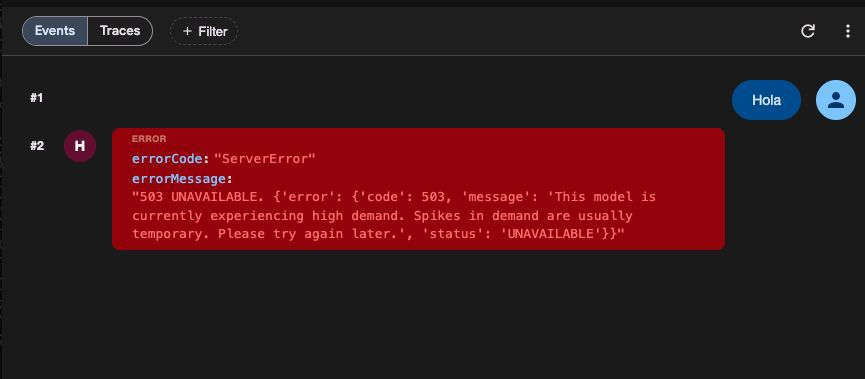
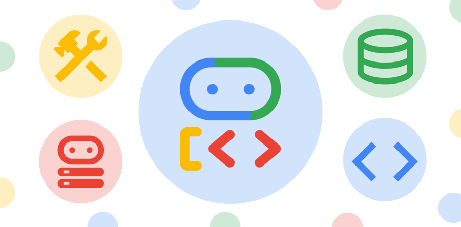

En producción
Google se está cayendo
Cada vez más seguido
Picos de alta demanda
Resultado
Mis agentes se quedan mudos
nadie responde
¿Cómo lo solucioné?
OpenRouter
fallback del proveedor
LangChain
nativo en el SDK
El agente no se queda mudo
tarda un poco más,
pero responde
El error que veo
503
UNAVAILABLE

Lo que yo hacía
Reintentar al mismo modelo
Intento
503
Reintento
+1 s
503
Reintento
+3 s
503
Carga del servicio
SATURADO
La solución
Fallback de modelo

si un modelo falla, responde otro
Opción 1 · proveedor
OpenRouter
Tu agente
OpenRouter
Modelo A
el que elegiste
503
Modelo B
otra compañía · más bajo
…y B se satura
Opción 2 · nativo
Google ADK
EXPERIMENTAL
F
a
l
l
b
a
c
k
M
o
d
e
l
adk-python · docs/guides/models/fallback_model
“FallbackModel wraps an ordered list of models and moves to the next one when a call fails.”
✓ Lo leí y lo implementé
Cómo funciona
Modelo de respaldo
from
google.adk.models
import
FallbackModel
agent =
LlmAgent
(
model=
FallbackModel
(models=[
'gemini-3.1-pro-preview'
,
503
'gemini-3.5-flash'
,
]),
)
✓ Responde gemini-3.5-flash
Pasa muy seguido
Usa un fallback
Nativo
Google ADK, LangChain
· en tu framework
Proveedor
OpenRouter
· otro proveedor